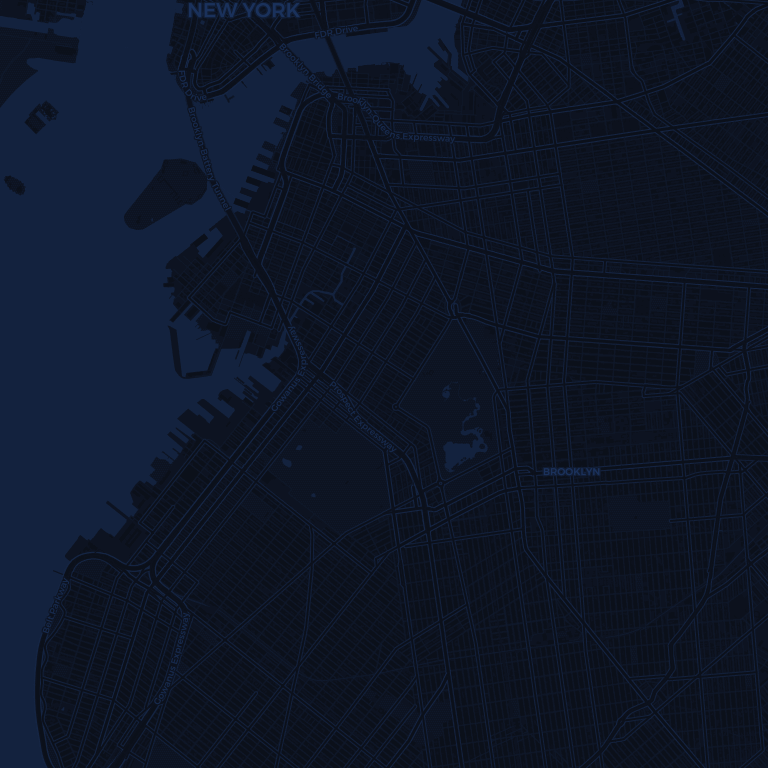

01
From your Mac

A live dark map. Search, click, drop a pin — your location moves the instant you set it.
Spoofr moves your iPhone's GPS to any point on Earth — and every app on your phone believes it. No jailbreak.
Pick a point on the map. Your iPhone is there. Maps, weather, games, the apps that check where you are — all of them believe it.

A live dark map. Search, click, drop a pin — your location moves the instant you set it.
Scan a QR and steer everything from your phone's browser. Leave the cable behind.
Plug in, tap Trust, flip on Developer Mode — Spoofr walks you through it with a built-in guide.
Search for anywhere on Earth, or just tap the map. Drop a pin.
Set it. Every app on your iPhone now sees the new location — instantly.
Free, forever. No account, no catch.
Download for macOS ↓